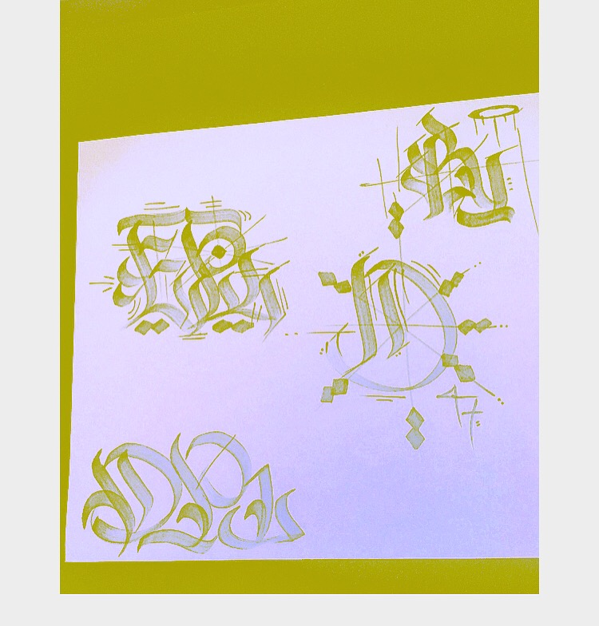

Challenge:
Lab 11 wanted us to create a nav section for our page as well as create a sidebar for a short paragraph about ourselves. It was a second step into the world of styling block elements and was one of the more difficult labs to date.
Problems:
Nick and I ran into lots of issues when trying to style our page and our newly added elements in css and so it was a painstaking process of using the google chrome inspect feature to keep track of what was going wrong.
At first we struggled to create the block itself for our nav section and then the process of spacing and aligining our nav bar/sidebar proved to be weird for us. I think how we set up our divisions led up to have issues with padding/margins/borders.
I went through and removed some borders, changed padding and margin amounts and finally managed to get my side bar text to float one side. I make my nav bar finally stretch across the top of the body and called it there.
For the most part I do not believe we did most of the things we were tasked to complete correctly as. I need to revisit this lab and probably the last one to try and hone my skills and reenforce what was in the lecture.
Results:
We added a navagation bar to the top of our page, with a button to take us back to the home page in the corner of the page. I added a coloumn on the right with some facts about me and changed the colors of the page.
I want to revisit this and fianlly get around to doing my homepage, this weekend I want to try and do some solo work and so hopefully Ill have more to offer for my partner.
